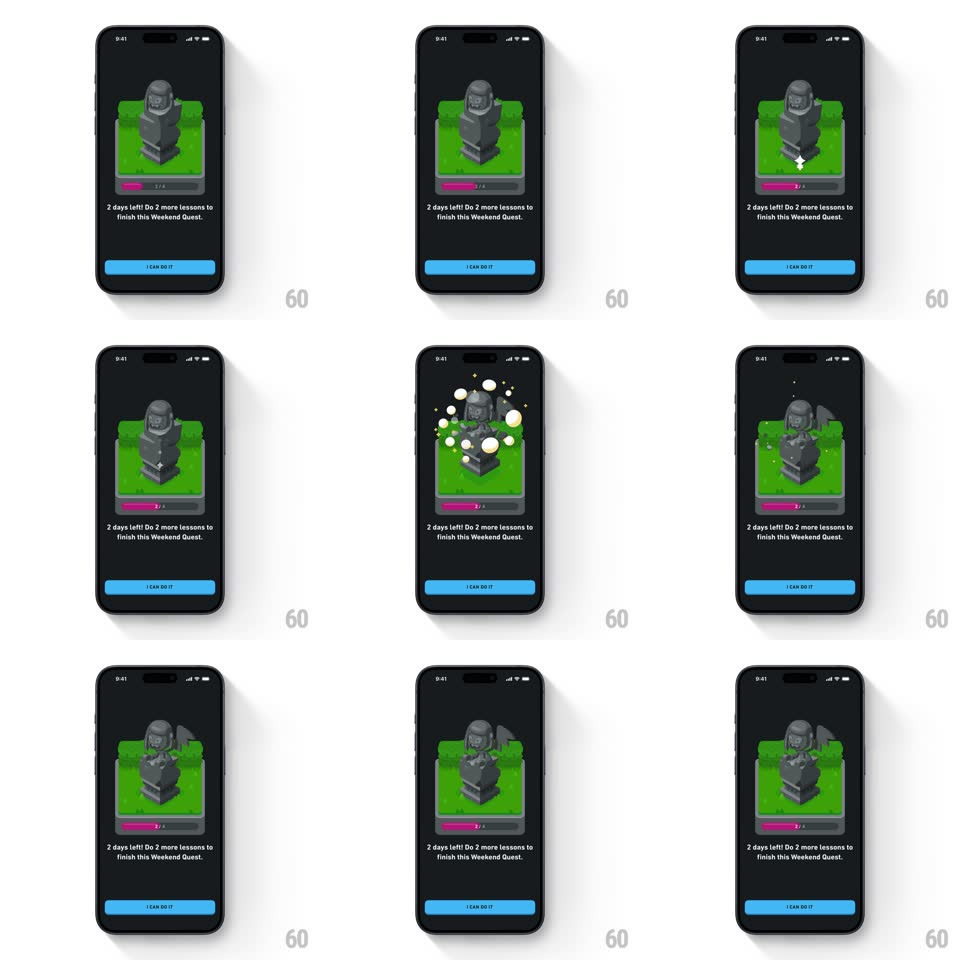

Media
Frame-by-frame

Rebuild this animation 1:1: Duolingo's Weekend Quest sculpture reveal - the gray stone statue pops with a ring burst and breaks into fragments, revealing the colored character inside.

Rebuild this animation 1:1: Duolingo's Weekend Quest sculpture reveal - the gray stone statue pops with a ring burst and breaks into fragments, revealing the colored character inside.
## Integration
Integration: stack-agnostic spec - springs given as stiffness/damping, timed motions as duration + curve; map every value to your framework and animation library of choice.
## Scene
A dark screen with the quest card: a green-framed scene holding a chunky gray stone statue on a pedestal, a pink progress bar ("2/3") across the card's bottom edge, the copy "2 days left! Do 2 more lessons to finish this Weekend Quest.", and a blue "I CAN DO IT" button.
## Motion spec
Pattern: sculpture pop and stone-break reveal.
- The card fades up (12px rise, 300ms), then the statue shudders (small +/-2px jitter, 200ms) as a crack line flashes across it.
- The pop: a yellow-white puff ring expands outward from the statue's center (scale 0.2 -> 1.6, 350ms, fading) while the statue launches up with squash-stretch (spring ~380/11).
- The stone shell breaks apart: 8-10 gray fragments fly outward with rotation and gravity (fade over 700ms), revealing the colored character underneath at scale 0.6 -> 1 (spring ~400/13).
- White/green bubbles and small stars drift up around the revealed character (600ms, 30ms stagger).
- The character settles with a happy bob (two 4px dips, 400ms); the progress bar and copy hold still throughout.
## Calibration
- The break reads as stone: chunky angular fragments, not confetti strips.
- The reveal is a scale-in from inside the shell - the character grows out of the crumbling statue, not a swap.
## Reduced motion
The statue crossfades to the colored character (300ms) with no fragments or ring.
## Don't miss
- The pink progress bar sits on the card's bottom border and never moves - all action is inside the green frame.
- The puff ring is the first beat of the pop - it leads the fragments by ~80ms.